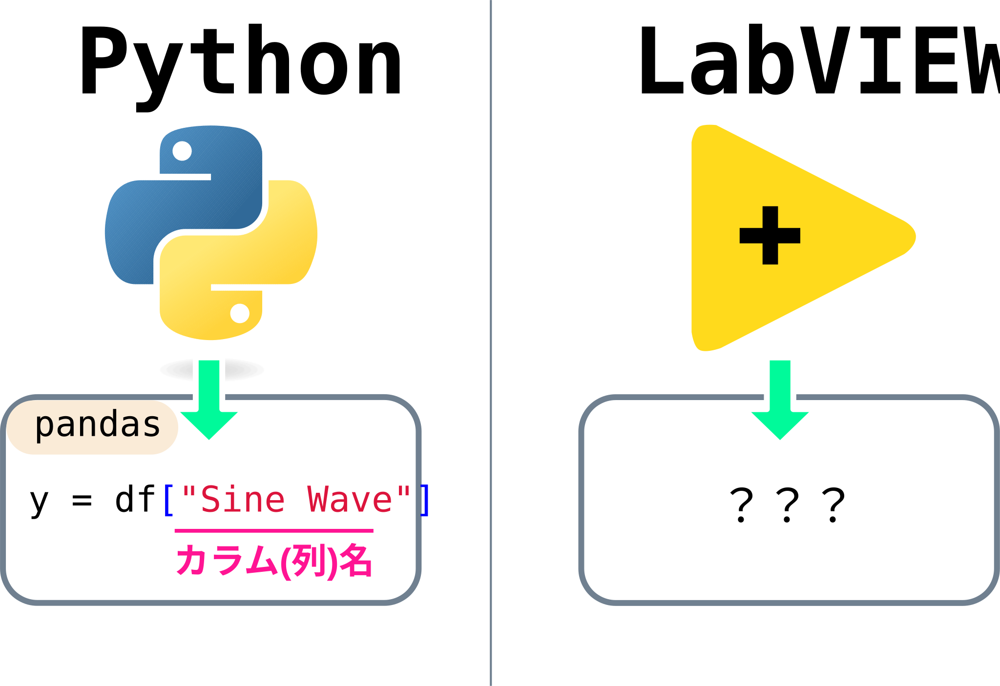
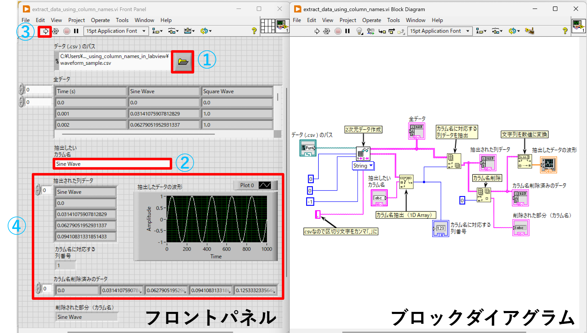
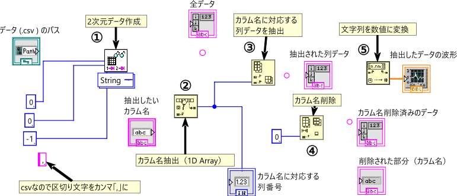
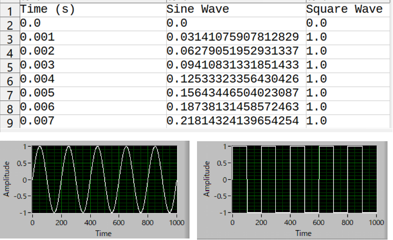
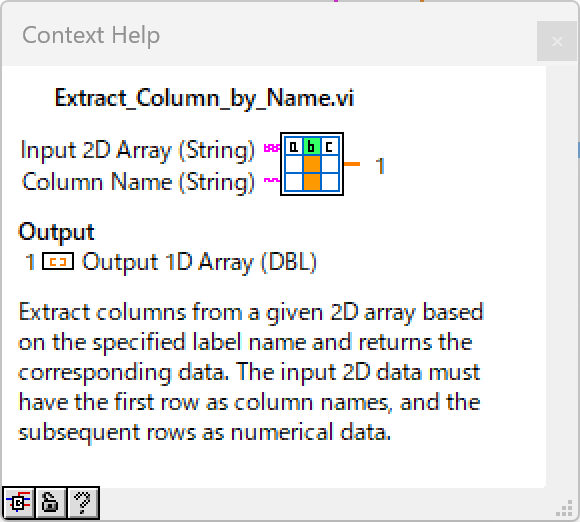
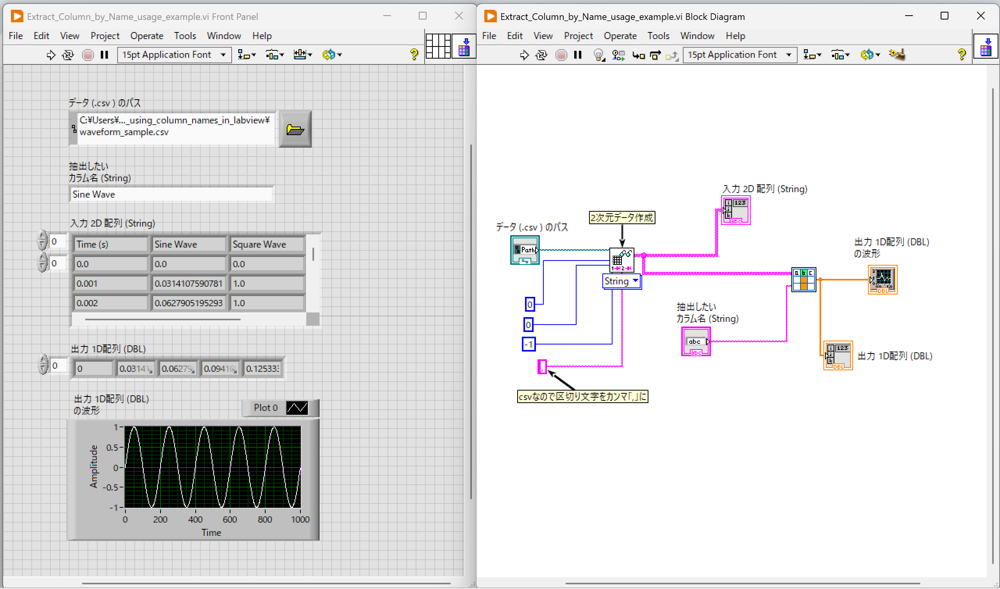

やりたいこと
2次元のデータを扱うときに、Pythonのpandasモジュールを使うとカラム（列）名指定してデータを抜き出すことができますが、LabVIEWでも同じようなことができたら便利だなと思いました。

☝ LabVIEWでPythonのpandasみたいに列データを抜き出したい
作成したVI
作成したVIのフロントパネルとブロックダイアグラムは下の画像のようになります。① csvのファイルを指定して ② データ抽出したいカラム（列）名を指定して ③ 実行すると ④ フロントパネル下側に抽出されたデータと波形が表示されます。

☝ 作成したvi（フロントパネルとブロックダイアグラム）
処理の流れ
色々な方法があるかと思いますが、こんな手順で処理してみました
- Read Delimited Spreadsheet.vi を使ってcsvデータを 2D Array に変換（このときデータはすべて String 型）
- Read Delimited Spreadsheet.vi の 出力として first row（カラム名が含まれている） の 1D Array が得られるので、Search 1D Array を使って、指定したカラム名に対応する列インデックスを取得
- Read Delimited Spreadsheet.vi の出力から得た 2D Array から、Index Arrayを使って 手順2で求めた列インデックスで列データを抜き出す
- Delete from Array を使ってカラム名を削除する（数値データだけを残す）
- データが String型 になっているので、Fract/Exp String to Number を使って 数値（Double型）に変換する。

☝ 処理手順（ブロックダイアグラム）
サンプルファイル
作成したviとサンプルのcsvです！
- vi: extract_data_using_column_names_v21.0.vi (LabVIEW 2021 version)
- サンプルcsv: waveform_sample.csv

サブVIとして実装
サブVIにしたほうが使いやすそうなので、サブVIとしても実装してみました。上側の入力ピンには 2D Array (String)、下側の入力ピンには抜き出したい列名を指定すると、列のデータが 1D Array (Double) で得られます。2D Arrayの1行目にカラム名、2行目以降に数値データが含まれているデータを入力してください。
- SubVI: Extract_Column_by_Name.vi (LabVIEW 2021 version)

- SubVIの使用例：Extract_Column_by_Name_usage_example.vi (LabVIEW 2021 version)
